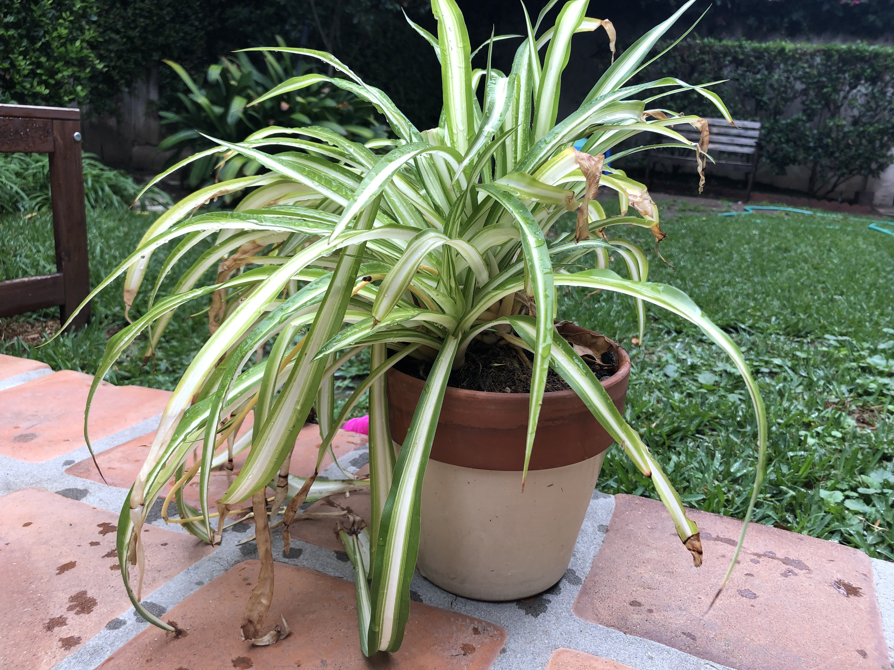

Marlo
Marlo the spider plant prefers the pronouns he/they, enjoys sunbathing, and loves the color purple. His favorite food is apples and cheese and his guilty pleasure is dogs, specifically BJ and Lily.
-NR
Marlo the spider plant prefers the pronouns he/they, enjoys sunbathing, and loves the color purple. His favorite food is apples and cheese and his guilty pleasure is dogs, specifically BJ and Lily.
-NR